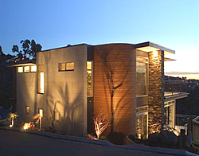
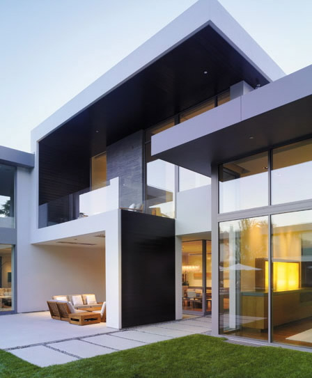
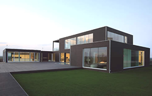

Our Homes
LK Eco-Wise Homes offers our clients a complete solution, from design and construction, to power generation, heating, ventilation, interior design and landscaping.
We provide a one-stop shop for sustainable living. We use the most updated energy efficient products to meet our high standard of eco-friendly home.
Hot water
Solar hot water collectors, fitted at the time of construction, add minimally to overall cost of the home but ensure a year-round supply of reliable hot water, backed up by gas bottle heating when required.
Power supply
Power is stored in deep cycle batteries in the custom-designed power room alongside the house. An inverter is used to convert the deep cycle battery power into AC power that can be used to run appliances in the house as usual. All our homes carry solar, wind turbine and bio-fuel generation.
Landscaping
LK Landscaping comes as a part of our Eco-Wise homes package:
- We work to preseve trees and natural vegetation during construction if the existing plants will be beneficial to the home.
- Our planners take into account the whole building site, not just the house, to create an environmentally sustainable haven.
- We do just as well with an inner city pocket-sized section as a rural sprawl.
- One or two perfectly selected and placed trees can be add substantially to attractiveness of your property, provide shelter and shade and a haven for birds.
If we aren't careful, our homes can become laden with all sort of irritants.
- Natural window treatments that are easy to clean, like wooden slatted blind, provide a far better option for a dust-free environment.
- All our new homes allow for comprehensive heat pump systems and all standard designs have been pre-tested for maximum efficiency for winter heating, summer air conditioning, and clean air inside the house.
- We use only non-toxic paints, glues, sealants and finishing treatments.
Our Designs
We design our homes to fit and blend with the natural environment. Our popular designs include:
- Tui
- Kereru
- Pukeko
- Fantail
- Kakapo
- Kea
| Tui | The modern classic, Tui, continues to attract great interest. Two of the five model sold have featured in the magazine Homes and Outdoors, because of LK Eco-Wise Homes' policy of preserving the natural environment as much as possible. |  |
|---|---|---|
| Kereru | This Kereru home was nestled into an-inner city property in Posonby Road, Auckland. The old villa on the property was removed and the new home was constructed without disturbing the well-established native and fruit tree. This attarctive property has always been popular with the local people and a great deal of approval was expressed over the way the new home blended in. |
 |
| Pukeko | This Pukeko home is a much-admired feature on the cost near Miranda, in the Hauraki. It features dramatic coastal planting, raised vegetable beds, shade houses and a fledging macadamia orchard, agaisnt a backdrop of native bush. |  |
Design For You
You can choose to have a home designed for you or you can select one of our designs as a starting point and adapt it to suit your needs and demands of your section.
Just give us a call now to discuss your requirements.
Phone: 04 123 4567 Email:info@lkecowise.co.nz